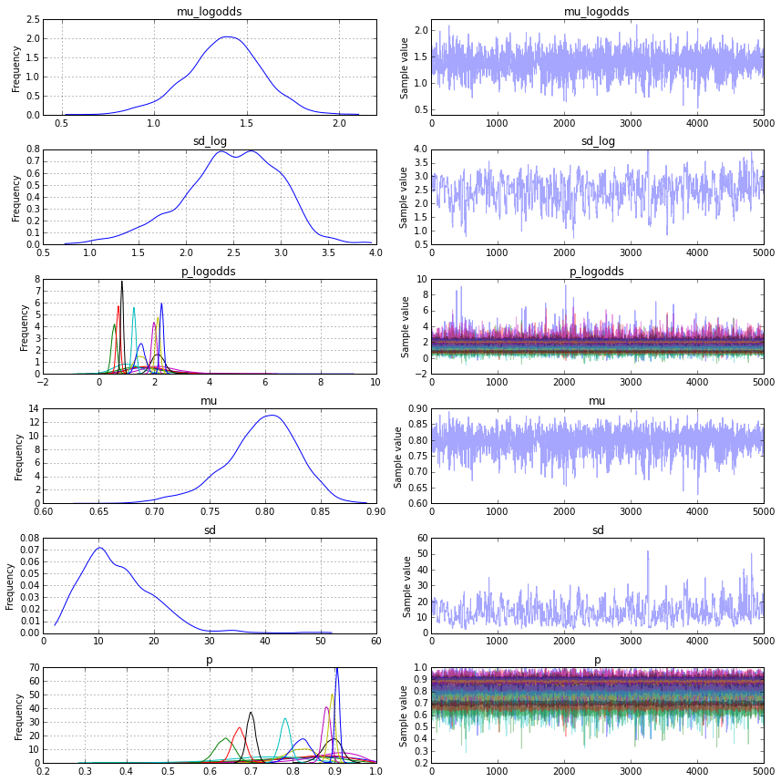
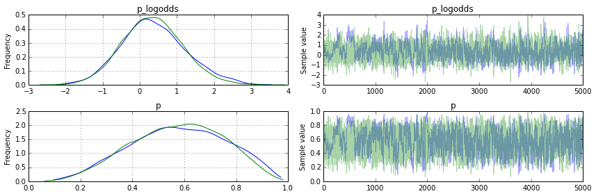
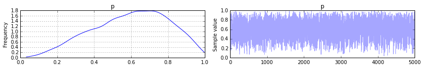
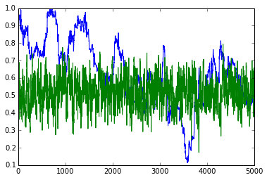
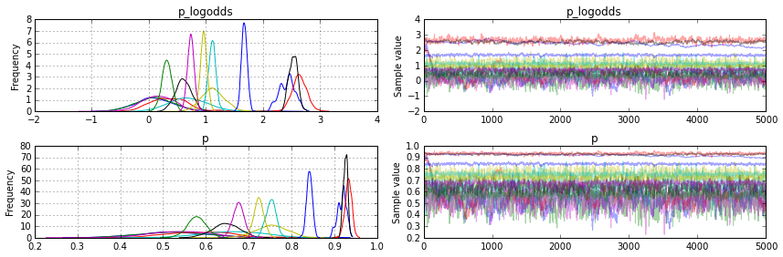
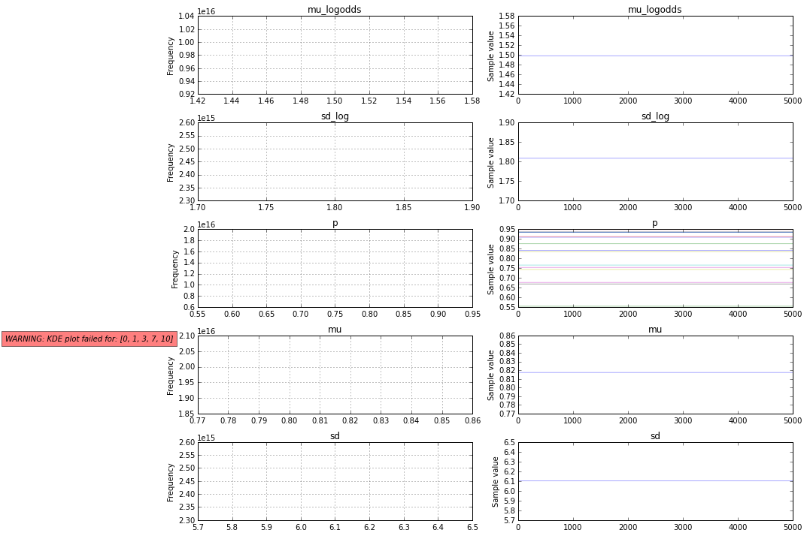
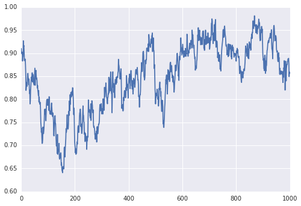
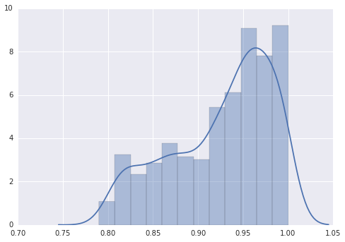

In [4]:
%matplotlib inline
import numpy as np
import scipy.stats as st
thetas = st.beta(8,2).rvs(15)
total = np.array([3, 5, 10, 15, 20, 100, 200, 300, 500, 1000, 1200, 1300, 1500, 2000, 3000])
data = np.random.binomial(n=total, p=thetas)
In [6]:
data
Out[6]:
array([ 3, 4, 9, 10, 19, 82, 180, 246, 316, 669, 937,
1146, 1342, 1398, 2721])
In [5]:
thetas
Out[5]:
array([ 0.9609843 , 0.87179519, 0.75682113, 0.73467667, 0.88316941,
0.88311131, 0.89165686, 0.80612506, 0.65879199, 0.65079332,
0.77988827, 0.88966937, 0.8964386 , 0.69317365, 0.89692881])
In [7]:
import pymc3 as pm
import scipy.optimize as opt
with pm.Model() as model:
mu = pm.Beta('mu', alpha=1, beta=1)
sd = pm.HalfCauchy('sd', 1, testval=6)
p = pm.Beta('p', mu=mu, sd=sd, shape=15, testval=thetas)
like = pm.Binomial('like', n=total, p=p, observed=data)
start = pm.find_MAP(fmin=opt.fmin_l_bfgs_b)
step = pm.NUTS(scaling=start)
tr = pm.sample(5000, step, start=start)
/home/wiecki/miniconda3/lib/python3.4/site-packages/IPython/html.py:14: ShimWarning: The `IPython.html` package has been deprecated. You should import from `notebook` instead. `IPython.html.widgets` has moved to `ipywidgets`.
"`IPython.html.widgets` has moved to `ipywidgets`.", ShimWarning)
/home/wiecki/miniconda3/lib/python3.4/site-packages/IPython/utils/traitlets.py:5: UserWarning: IPython.utils.traitlets has moved to a top-level traitlets package.
warn("IPython.utils.traitlets has moved to a top-level traitlets package.")
/home/wiecki/miniconda3/lib/python3.4/importlib/_bootstrap.py:321: RuntimeWarning: numpy.ndarray size changed, may indicate binary incompatibility
return f(*args, **kwds)
[-----------------100%-----------------] 5000 of 5000 complete in 35.1 sec
In [8]:
pm.traceplot(tr);

In [9]:
list(zip(tr['p'].mean(axis=0), thetas, data, total))
Out[9]:
[(0.84139000895059124, 0.96098430164553861, 3, 3),
(0.79913226349675337, 0.87179519208715994, 4, 5),
(0.8449979357233427, 0.75682112505552479, 9, 10),
(0.72832890101996361, 0.73467667316879104, 10, 15),
(0.8939819380189763, 0.88316941227468626, 19, 20),
(0.81833018818821124, 0.8831113141644884, 82, 100),
(0.89333340596432698, 0.89165686449032244, 180, 200),
(0.81915497204448673, 0.80612506154071184, 246, 300),
(0.63646555557694018, 0.65879199256603438, 316, 500),
(0.67050868457446211, 0.65079331747005842, 669, 1000),
(0.7812927571654722, 0.77988827213874623, 937, 1200),
(0.88087766328796591, 0.88966937311715144, 1146, 1300),
(0.89382057738896459, 0.89643859677987459, 1342, 1500),
(0.69947406958008895, 0.69317365347555937, 1398, 2000),
(0.90656910875172181, 0.8969288070796706, 2721, 3000)]
In [11]:
list(zip(tr['p'].mean(axis=0), thetas, data, total))
Out[11]:
[(0.84131353835848199, 0.96098430164553861, 3, 3),
(0.78543701345193651, 0.87179519208715994, 4, 5),
(0.84094868495380093, 0.75682112505552479, 9, 10),
(0.6359252813148264, 0.73467667316879104, 10, 15),
(0.89868023627107851, 0.88316941227468626, 19, 20),
(0.8170583888698445, 0.8831113141644884, 82, 100),
(0.89474985533090146, 0.89165686449032244, 180, 200),
(0.81605133631293503, 0.80612506154071184, 246, 300),
(0.63612401822189679, 0.65879199256603438, 316, 500),
(0.66947577142708536, 0.65079331747005842, 669, 1000),
(0.77969982448208586, 0.77988827213874623, 937, 1200),
(0.88144512404250652, 0.88966937311715144, 1146, 1300),
(0.89432133701335548, 0.89643859677987459, 1342, 1500),
(0.69929959651778295, 0.69317365347555937, 1398, 2000),
(0.90632963602637573, 0.8969288070796706, 2721, 3000)]
In [8]:
with model:
fit = pm.variational.advi()
In [10]:
list(zip(tr['p_logodds'].mean(axis=0), thetas, data, total))
Out[10]:
[(0.33366071327040675, 0.91010795906661013, 2, 3),
(0.49989285135001399, 0.81512980284687675, 5, 5),
(0.65928137791033892, 0.74346124378883882, 10, 10),
(0.72089343995319266, 0.90105572006038059, 14, 15),
(0.62106802513313109, 0.85029192718928082, 16, 20),
(1.1743394272103191, 0.85357165718350747, 84, 100),
(1.9393401748505799, 0.90662195649845423, 187, 200),
(1.1609769379550774, 0.78694148507870676, 236, 300),
(1.4306966994104551, 0.8221859969760229, 413, 500),
(0.59844777125831672, 0.64746564076715862, 648, 1000),
(1.8190028682564339, 0.87019126252123613, 1044, 1200),
(0.56992431072952765, 0.64537721412448512, 832, 1300),
(0.93510116825414447, 0.73418028487501363, 1083, 1500),
(1.7571036244735512, 0.86658646913382009, 1717, 2000),
(1.3960082233985094, 0.82011779633467563, 2414, 3000)]
In [12]:
fit[0]['p_logodds']
Out[12]:
array([ 0.43802357, 0.58660138, 0.73020519, 0.78015469, 0.68650579,
1.1975696 , 1.93981022, 1.17707491, 1.44159941, 0.60964486,
1.82351568, 0.57746038, 0.9439072 , 1.76275826, 1.4029983 ])
In [27]:
import pymc3 as pm
import scipy.optimize as opt
with pm.Model() as model:
p = pm.Beta('p', alpha=1, beta=1, shape=2, testval=0.75)
like = pm.Binomial('like', n=np.array([3., 3.]), p=p, observed=np.array([2., 2.]))
step = pm.Slice()
tr2 = pm.sample(5000, step)#, start=start)
[-----------------100%-----------------] 5000 of 5000 complete in 6.8 sec
In [28]:
pm.traceplot(tr2)
Out[28]:
array([[<matplotlib.axes._subplots.AxesSubplot object at 0x7f6bbea339b0>,
<matplotlib.axes._subplots.AxesSubplot object at 0x7f6bbe890320>],
[<matplotlib.axes._subplots.AxesSubplot object at 0x7f6bbe805278>,
<matplotlib.axes._subplots.AxesSubplot object at 0x7f6bbe7ce630>]], dtype=object)

In [18]:
import pymc3 as pm
import scipy.optimize as opt
with pm.Model() as model:
p = pm.Beta('p', alpha=1, beta=1, testval=0.75, transform=None)
like = pm.Binomial('like', n=3, p=p, observed=[2])
step = pm.Slice()
tr2 = pm.sample(5000, step)#, start=start)
[-----------------100%-----------------] 5000 of 5000 complete in 6.0 sec
In [22]:
pm.traceplot(tr2)
Out[22]:
array([[<matplotlib.axes._subplots.AxesSubplot object at 0x7f6bbdc5cb00>,
<matplotlib.axes._subplots.AxesSubplot object at 0x7f6bbe70af98>]], dtype=object)

In [21]:
tr2[p].mean()
Out[21]:
0.59830933423768873
In [42]:
import pymc3 as pm
import scipy.optimize as opt
with pm.Model() as model:
p = pm.Beta('p', alpha=1, beta=1, shape=len(thetas), testval=thetas, transform=None)
like = pm.Binomial('like', n=total, p=p, observed=data, transform=None)
start = pm.find_MAP(fmin=opt.fmin_l_bfgs_b)
step = pm.NUTS(scaling=start)
tr_no_trans = pm.sample(5000, step)#, start=start)
[-----------------100%-----------------] 5000 of 5000 complete in 24.3 sec
In [44]:
import pymc3 as pm
import scipy.optimize as opt
with pm.Model() as model:
p = pm.Beta('p', alpha=1, beta=1, shape=len(thetas), testval=thetas)
like = pm.Binomial('like', n=total, p=p, observed=data)
start = pm.find_MAP(fmin=opt.fmin_l_bfgs_b)
step = pm.NUTS(scaling=start)
tr_trans = pm.sample(5000, step)#, start=start)
[-----------------100%-----------------] 5000 of 5000 complete in 6.2 sec
In [43]:
plt.plot(tr_no_trans['p'][:, 0])
plt.plot(tr_trans['p'][:, 0])
Out[43]:
[<matplotlib.lines.Line2D at 0x7f6ba75830f0>]

In [36]:
import matplotlib.pyplot as plt
In [33]:
pm.traceplot(tr2);

In [11]:
import pymc3 as pm
import scipy.optimize as opt
with pm.Model() as model:
mu = pm.Beta('mu', alpha=1, beta=1, testval=0.8)
sd = pm.HalfCauchy('sd', 1, testval=6.)
p = pm.Beta('p', mu=mu, sd=sd, shape=len(thetas), testval=thetas)
like = pm.Binomial('like', n=total, p=p, observed=data)
start = pm.find_MAP(fmin=opt.fmin_l_bfgs_b)
step = pm.Slice()
tr = pm.sample(5000, step, start=start)
[-----------------100%-----------------] 5000 of 5000 complete in 114.8 sec
In [12]:
list(zip(tr['p'].mean(axis=0), thetas, data, total))
Out[12]:
[(0.49158676989714661, 0.94023923765608974, 2, 3),
(0.54877548909259566, 0.82296397756641915, 3, 5),
(0.57735754405390782, 0.89215245402111498, 9, 10),
(0.69300618148889603, 0.95529118296546656, 15, 15),
(0.56813421199502712, 0.70800743717292769, 12, 20),
(0.75823531900498098, 0.81925643321455743, 83, 100),
(0.65335160289881755, 0.64738985410575445, 134, 200),
(0.90374894026151686, 0.93108146381115575, 283, 300),
(0.57744928045547772, 0.57199697523161286, 291, 500),
(0.93135840076921794, 0.95165981900763041, 946, 1000),
(0.75233238997030671, 0.75900528587708682, 910, 1200),
(0.67567499856623092, 0.68555968414363544, 884, 1300),
(0.72428764992407524, 0.74745700522290026, 1095, 1500),
(0.92532654653862356, 0.93020898695596921, 1866, 2000),
(0.84205434176571547, 0.84206033433711269, 2537, 3000)]
In [10]:
import pymc3 as pm
import scipy.optimize as opt
with pm.Model() as model:
mu = pm.Beta('mu', alpha=1, beta=1, testval=0.8)
sd = pm.HalfCauchy('sd', 1, testval=6.)
p = pm.Beta('p', mu=mu, sd=sd, shape=len(thetas), testval=thetas, transform=None)
like = pm.Binomial('like', n=total, p=p, observed=data)
start = pm.find_MAP(fmin=opt.fmin_l_bfgs_b)
step = pm.Slice()
tr = pm.sample(5000, step, start=start)
[-----------------100%-----------------] 5000 of 5000 complete in 91.0 sec
In [9]:
import pymc3 as pm
import scipy.optimize as opt
with pm.Model() as model:
mu = pm.Beta('mu', alpha=1, beta=1, testval=0.8)
sd = pm.HalfCauchy('sd', 1, testval=6.)
p = pm.Beta('p', mu=mu, sd=sd, shape=len(thetas), transform=None, testval=thetas)
like = pm.Binomial('like', n=total, p=p, observed=data)
start = pm.find_MAP(fmin=opt.fmin_l_bfgs_b)
step = pm.Slice() #NUTS(scaling=start)
tr = pm.sample(5000, step, start=start)
[-----------------100%-----------------] 5000 of 5000 complete in 103.8 sec
In [10]:
list(zip(tr['p'].mean(axis=0), thetas, data, total))
Out[10]:
[(0.89143064476726164, 0.94023923765608974, 2, 3),
(0.72748829355706612, 0.82296397756641915, 3, 5),
(0.84488593058228001, 0.89215245402111498, 9, 10),
(0.97117666037021266, 0.95529118296546656, 15, 15),
(0.70790415718841504, 0.70800743717292769, 12, 20),
(0.8327520032968172, 0.81925643321455743, 83, 100),
(0.67523213690482842, 0.64738985410575445, 134, 200),
(0.93995993746062922, 0.93108146381115575, 283, 300),
(0.58459285320868271, 0.57199697523161286, 291, 500),
(0.94454535174765353, 0.95165981900763041, 946, 1000),
(0.7584927883798922, 0.75900528587708682, 910, 1200),
(0.68227262754461704, 0.68555968414363544, 884, 1300),
(0.7302854768294198, 0.74745700522290026, 1095, 1500),
(0.93198976855819415, 0.93020898695596921, 1866, 2000),
(0.84477943852993342, 0.84206033433711269, 2537, 3000)]
In [8]:
pm.traceplot(tr);

In [16]:
list(zip(tr['p'].mean(axis=0), thetas, data, total))
Out[16]:
[(0.82747689011760828, 0.91010795906661013, 2, 3),
(0.86595659172705131, 0.81512980284687675, 5, 5),
(0.90108596227038285, 0.74346124378883882, 10, 10),
(0.87574850117844383, 0.90105572006038059, 14, 15),
(0.80159070988848802, 0.85029192718928082, 16, 20),
(0.85600911611632635, 0.85357165718350747, 84, 100),
(0.92658902800252585, 0.90662195649845423, 187, 200),
(0.78584432242674507, 0.78694148507870676, 236, 300),
(0.82445882166983198, 0.8221859969760229, 413, 500),
(0.64970825147423039, 0.64746564076715862, 648, 1000),
(0.86796229721679374, 0.87019126252123613, 1044, 1200),
(0.64093517976567582, 0.64537721412448512, 832, 1300),
(0.72415390819634629, 0.73418028487501363, 1083, 1500),
(0.85812705419630186, 0.86658646913382009, 1717, 2000),
(0.80455981818835165, 0.82011779633467563, 2414, 3000)]
In [39]:
import seaborn as sns
import matplotlib.pyplot as plt
plt.plot(tr[p][4000:, 4])
plt.figure()
sns.distplot(tr[p][4000:, 1])
Out[39]:
<matplotlib.axes._subplots.AxesSubplot at 0x7f730a89a4e0>

